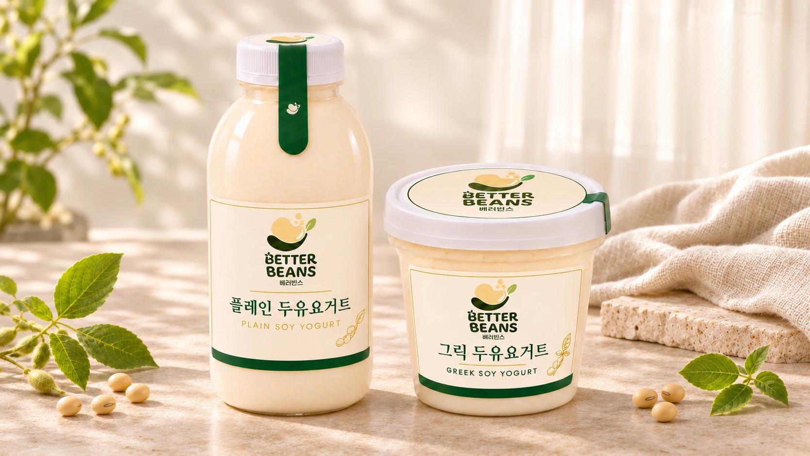
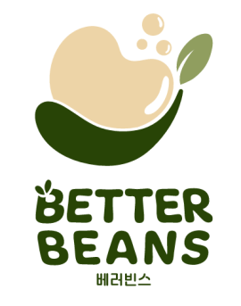
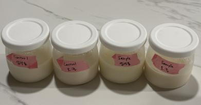
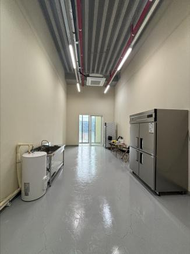

회사 이름
소이스토리
A Better Way to Soy
콩을 단순한 원료가 아니라, 더 맛있게 즐기는 방식으로 제안합니다.
브랜드 스토리
콩을 단순한 원료로 보지 않습니다. 더 맛있게 즐기는 방법을 찾아 제안하는 것이 소이스토리의 일입니다.

회사 이름
A Better Way to Soy
콩을 단순한 원료가 아니라, 더 맛있게 즐기는 방식으로 제안합니다.
브랜드 이름
발효로 콩의 가치를 높이다

콩의 좋은 성분을 더 잘 활용하는 식품을 만들겠다는 뜻을 담은 이름입니다.
시판 두유요거트의 원재료명을 하나씩 읽어 보면 올리고당이나 덱스트린, 증점제, 향료가 함께 적혀 있는 경우가 많습니다.
비건 식단을 지키거나 건강을 생각해 식물성 요거트를 찾는 분들은 대개 첨가물을 피하고 싶어 합니다. 그런데 정작 원재료를 보고 고르려 하면 마땅한 선택지가 없었습니다.
그래서 두유와 유산균만으로 만드는 두유요거트를 직접 개발하기로 했습니다. 원재료를 줄이되, 맛과 식감은 포기하지 않는 것이 목표였습니다.
맛과 원재료를 모두 중요하게 생각하는 분을 위한 무첨가 두유요거트
당류나 증점제 없이 맛과 질감을 내려면 종균과 발효 조건이 그 역할을 대신해야 합니다. 베러빈스는 대표가 연구개발에 참여한 국내 개발 복합 종균을 쓰고, 그 종균에 맞춰 배합과 발효 조건을 잡았습니다.
종균은 개신바이오텍이 생산해 안정적으로 공급합니다.
기술이 연구실에 머물지 않도록, 연구와 생산을 가까운 곳에 두었습니다.

충북 청주
충북대학교의 자문을 받으며 복합 종균 연구에 참여했습니다. 종균도 이곳에서 생산합니다.

충남 천안
천안에 마련한 작업장에서 두유요거트를 직접 만듭니다.

전국
온라인으로 주문받아 전국의 소비자에게 보내 드립니다.
국산 유기농 콩으로 만드는 것이 목표입니다. 다만 순서를 정했습니다. 맛과 수요를 먼저 확인한 뒤 원료를 단계적으로 바꿉니다.
지금
미국·캐나다·호주 등에서 온 대두로 만든 두유를 씁니다. 이 원료로 맛과 수요를 먼저 검증합니다.
2028년 장기 계획
국산 유기농 콩 공급처를 확보하고, HACCP와 유기농 인증을 준비합니다.
대표
종균 연구부터 배합, 발효, 품질 관리까지 제품의 기술 판단을 직접 맡습니다.

“개발에 직접 참여했기에, 이 종균을 누구보다 잘 압니다.”
마케팅
브랜드와 마케팅 전략을 세우고 온라인 판매 채널과 SNS 콘텐츠를 운영합니다.
두유요거트 연구개발 자문
충북대학교 식품생명공학과 교수. 한국프로바이오틱스·마이크로바이옴학회 회장을 지냈습니다.
종균 생산 협력
복합 종균을 생산하고 안정적으로 공급합니다.
플레인 500mL와 그릭 200g, 두 가지를 준비했습니다.